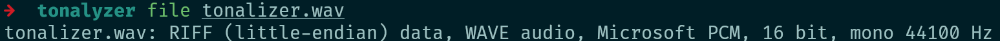
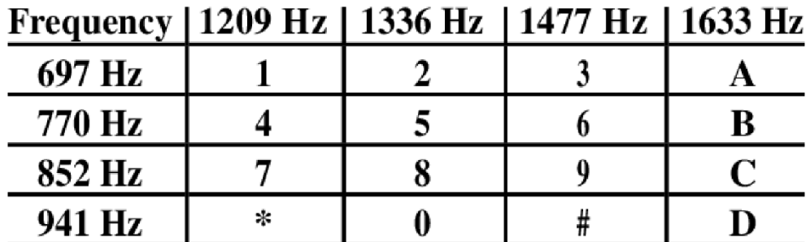
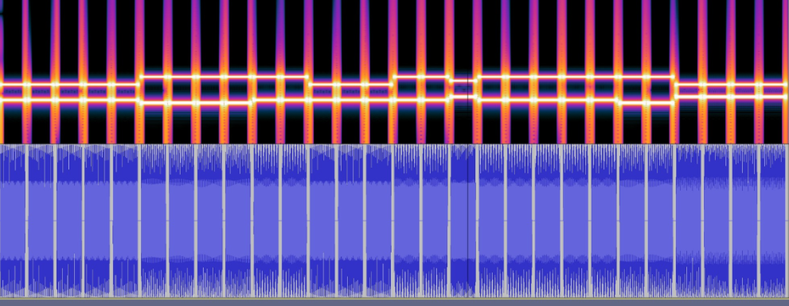
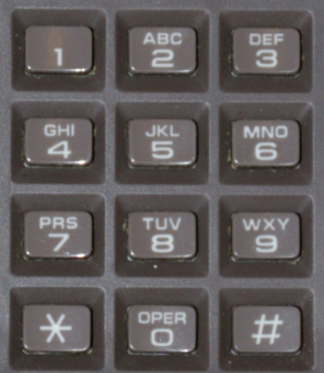

Tonalyzer
Mysterious frequencies have surfaced in the depths of Neon City. Will you succeed in uncovering its secret ? It has to mean something...
Writeup
Here is the step by step solution

Which is recognize as a audio file. The first listening provides us a lot of informations, it's seems to be phone beep's.
It's a way to communicate using audio canals


We can clearly see lines and "tics"
We got something like that : 1209 770 : 4 1477 697 : 3 1477 770 : 6 1209 770 : 4 1477 770 : 6 1336 852 : 8 1477 770 : 6 1477 697 : 3 1209 852 : 7
But using this "time unit" we can repeat keys X times. For example the frist one (4) will be repeated 5 times. So we got : 44444 3333 66 333 66 8 66666 33 7777
But now if you are familiar with with old phone keyboard, it doesn't have much letter on keys, the maximum is 3 or 4 not 5. So we need to split it correctly.

MCTF{HIDDENINTONES}